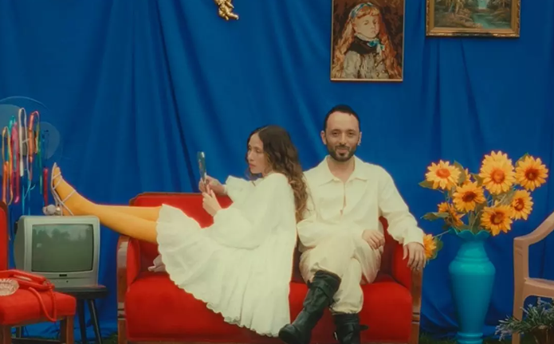

Hanfendi
Mabel Matiz, bu yıl yayımlanması planlanan yeni albümünden ilk teklisi “Hanfendi”yi Pose Records etiketiyle müzikseverlerle buluşturdu. Sözü ve müziği Mabel Matiz’e, aranjmanı Adi Rotem’e ait olan “Hanfendi”, yoğun 80’ler retro synth’leri ve güncel ritmiyle etkileyici bir sound örneğini dinleyiciye sunuyor. Mabel Matiz “en iyimser şarkılarımdan” dediği bu yeni şarkısında gündelik, ikili konuşmalara yer veriyor. Şarkının artwork çalışması ise Maria Jesus Contreras’a ait. Şarkı ile eş zamanlı olarak yayımlanan video klibin yönetmenliğini Melih Kun, sanat yönetmenliği ve styling’ini Anıl Can yaptı.
Spotify'da Dinle